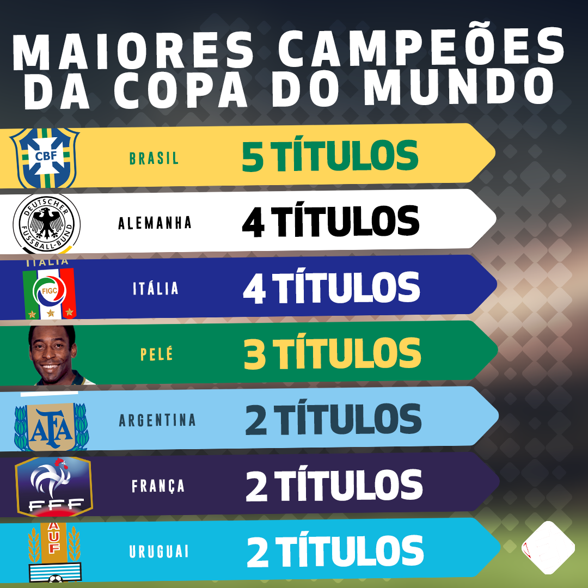

O Catar é um país árabe, conhecido oficialmente como um emirado do Oriente Médio, ocupando a pequena Península do Catar na costa nordeste da Península Arábica. O Catar é um emirado absolutista e hereditário comandado pela Casa de Thani desde meados do século XIX.
A Copa do Mundo de Futebol é uma competição internacional de futebol que ocorre a cada quatro anos, com exceção de 1942 e 1946, quando não foi realizada por conta da Segunda Guerra Mundial. Apenas oito países foram campeões mundiais até hoje. O Brasil, a única seleção a ter jogado em todas as competições, é o maior campeão com cinco títulos
